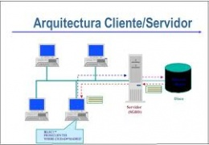
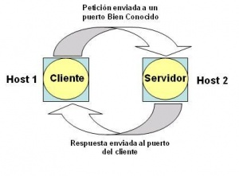

Aprende algo nuevo
La mejor información esta aquí
Arquitectura Cliente / Servidor
Arquitectura Cliente servidor. Esta arquitectura consiste básicamente en un cliente que realiza peticiones a otro programa (el servidor) que le da respuesta. Aunque esta idea se puede aplicar a programas que se ejecutan sobre una sola computadora es más ventajosa en un sistema operativo multiusuario distribuido a través de una red de computadoras. La interacción cliente-servidor es el soporte de la mayor parte de la comunicación por redes. Ayuda a comprender las bases sobre las que están construidos los algoritmos distribuidos.
Introducción
El servidor debe negociar con su Sistema Operativo un puerto (casi siempre bien conocido) donde esperar las solicitudes. El servidor espera pasivamente las peticiones en un puerto bien conocido que ha sido reservado para el servicio que ofrece. El cliente también solicita, a su sistema operativo, un puerto no usado desde el cual enviar su solicitud y esperar respuesta. Un cliente ubica un puerto arbitrario, no utilizado y no reservado, para su comunicación.
En una interacción se necesita reservar solo uno de los dos puertos, asignados un identificador único de puerto para cada servicio, se facilita la construcción de clientes y servidores.
Los servidores por lo general son más difíciles de construir que los clientes pues aunque se implantan como programas de aplicación deben manejar peticiones concurrentes, así como reforzar todos los procedimientos de acceso y protección del sistema computacional en el que corren, y protegerse contra todos los errores posibles. El cliente y el servidor pueden interactuar en la misma máquina.
Evolución
Computadora central
Desde sus inicios el modelo de administración de datos a través de computadoras se basaba en el uso de terminales remotas, que se conectaban de manera directa a una computadora central. Dicha computadora central se encargaba de prestar servicios caracterizados por que cada servicio se prestaba solo a un grupo exclusivo de usuarios.
Computadoras dedicadas
Esta es la era en la que cada servicio empleaba su propia computadora que permitía que los usuarios de ese servicio se conectaran directamente. Esto es consecuencia de la aparición de computadoras pequeñas, de fácil uso, más baratas y más poderosas de las convencionales.
Conexión libre
Hace más de 10 años que las computadoras escritorio aparecieron de manera masiva. Esto permitió que parte apreciable de la carga de trabajo de cómputo tanto en el ámbito de cálculo como en el ámbito de la presentación se lleven a cabo desde el escritorio del usuario. En muchos de los casos el usuario obtiene la información que necesita de alguna computadora de servicio. Estas computadoras de escritorio se conectan a las computadoras de servicio empleando software que permite la emulación de algún tipo de terminal. En otros de los casos se les transfiere la información haciendo uso de recursos magnéticos o por trascripción.
Cómputo a través de redes
Esta es la era que esta basada en el concepto de redes de computadoras, en la que la información reside en una o varias computadoras, los usuarios de esta información hacen uso de computadoras para laborar y todas ellas se encuentran conectadas entre si. Esto brinda la posibilidad de que todos los usuarios puedan acceder a la información de todas las computadoras y a la vez que los diversos sistemas intercambien información.
Arquitectura cliente-servidor
En esta arquitectura la computadora de cada uno de los usuarios, llamada cliente, produce una demanda de información a cualquiera de las computadoras que proporcionan información, conocidas como servidores estos últimos responden a la demanda del cliente que la produjo. Los clientes y los servidores pueden estar conectados a una red local o una red amplia, como la que se puede implementar en una empresa o a una red mundial como lo es la Internet. Bajo este modelo cada usuario tiene la libertad de obtener la información que requiera en un momento dado proveniente de una o varias fuentes locales o distantes y de procesarla como según le convenga. Los distintos servidores también pueden intercambiar información dentro de esta arquitectura.
Partes que componen el sistema
Cliente: Programa ejecutable que participa activamente en el establecimiento de las conexiones. Envía una petición al servidor y se queda esperando por una respuesta. Su tiempo de vida es finito una vez que son servidas sus solicitudes, termina el trabajo.
Servidor: Es un programa que ofrece un servicio que se puede obtener en una red. Acepta la petición desde la red, realiza el servicio y devuelve el resultado al solicitante. Al ser posible implantarlo como aplicaciones de programas, puede ejecutarse en cualquier sistema donde exista TCP/IP y junto con otros programas de aplicación. El servidor comienza su ejecución antes de comenzar la interacción con el cliente. Su tiempo de vida o de interacción es “interminable”. Los servidores pueden ejecutar tareas sencillas (caso del servidor hora día que devuelve una respuesta) o complejas (caso del servidor ftp en el cual se deben realizar operaciones antes de devolver una respuesta). Los servidores sencillos procesan una petición a la vez (son secuenciales o interactivos), por lo que no revisan si ha llegado otra petición antes de enviar la respuesta de la anterior.
Los más complejos trabajan con peticiones concurrentes aún cuando una sola petición lleve mucho tiempo para ser servida (caso del servidor ftp que debe copiar un archivo en otra máquina). Son complejos pues tienen altos requerimientos de protección y autorización. Pueden leer archivos del sistema, mantenerse en línea y acceder a datos protegidos y a archivos de usuarios. No puede cumplir a ciegas las peticiones de los clientes, deben reforzar el acceso al sistema y las políticas de protección. Los servidores por lo general tienen dos partes:
1. Programa o proceso que es responsable de aceptar nuevas peticiones: Maestro o Padre.
2. Programas o procesos que deben manejar las peticiones individuales: Esclavos o Hijos.
Clasificación
1. Servidores con estado 2. Servidores sin estado 3. Servidores concurrentes |
 |
Ventajas y Desventajas
Ventajas del esquema Cliente/servidor
1. Facilita la integración entre sistemas diferentes y comparte información, permitiendo por ejemplo que las máquinas ya existentes puedan ser utilizadas pero utilizando interfaces más amigables el usuario. De esta manera, se puede integrar PCs con sistemas medianos y grandes, sin necesidad de que todos tengan que utilizar el mismo sistema operativo.
2. Al favorecer el uso de interfaces gráficas interactivas, los sistemas construidos bajo este esquema tienen una mayor y más intuitiva con el usuario. En el uso de interfaces gráficas para el usuario, presenta la ventaja, con respecto a uno centralizado, de que no siempre es necesario transmitir información gráfica por la red pues esta puede residir en el cliente, lo cual permite aprovechar mejor el ancho de banda de la red.
3. La estructura inherentemente modular facilita además la integración de nuevas tecnologías y el crecimiento de la infraestructura computacional, favoreciendo así la escalabilidad de las soluciones. Contribuye además a proporcionar a los diferentes departamentos de una organización, soluciones locales, pero permitiendo la integración de la información.
Fuentes
1. http://www.monografias.com/trabajos24/arquitectura-cliente-servidor/arquitectura-cliente-servidor.shtml
2. http://cervantes1bachdyg.wikispaces.com/Arquitectura+cliente-servidor
3. http://www.cmg.jovenclub.cu/munic/cruz/redes/pages/arquitectura.htm
https://www.ecured.cu/Arquitectura_Cliente_Servidor#Introducci.C3.B3n
Nuevos Temas llegaran a nuestra web, Actualizandonos dia a dia.